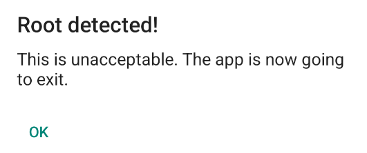
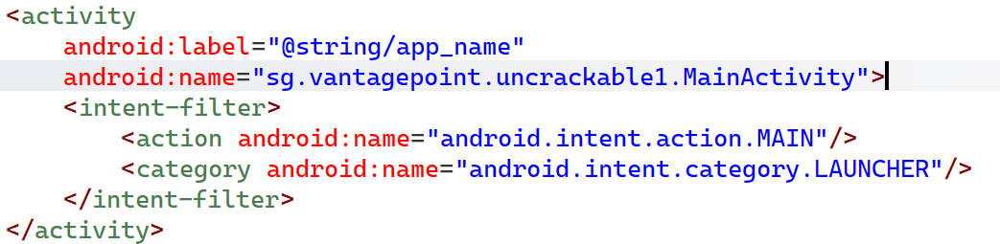
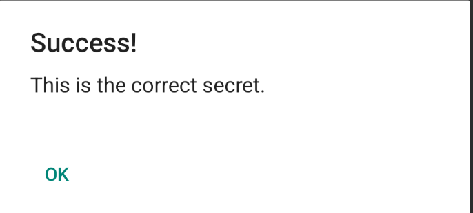

이번 글은 저번에 배운 Frida 를 활용하여 문제를 풀어보는 시간이다.
나는 UnCrackable Mobile Apps 라는 문제를 풀어보았다.
UnCrackable Mobile Apps
UnCrackable Mobile Apps 는 Android, iOS 를 위한 모바일 애플리케이션 리버싱 문제이다.
다음 사이트에 접속하여 Android, iOS 디렉터리를 골라 문제를 풀 수 있다.
https://github.com/OWASP/mastg/tree/master/Crackmes
mastg/Crackmes at master · OWASP/mastg
The OWASP Mobile Application Security Testing Guide (MASTG) is a comprehensive manual for mobile app security testing and reverse engineering. It describes technical processes for verifying the OWA...
github.com
나는 Android Studio 를 사용하고 있어서 Android 디렉터리 안에 있는 문제들을 풀었다.
UnCrackable-Level1
먼저 apk 를 설치한 후 애플리케이션을 열어보았다.

루팅을 한 것을 감지하여, 경고문이 나왔다.
OK 를 누르면, 애플리케이션이 종료된다.
다음으로 JADX 로 자세히 살펴보겠다.

AndroidManifest.xml 파일로 들어가서 MainActivity 의 위치를 확인하였다.
이 애플리케이션의 경우, MainActivity 의 경로는 sg.vantagepoint.uncrackable1.MainActivity 이다.
protected void onCreate(Bundle bundle) {
if (c.a() || c.b() || c.c()) {
a("Root detected!");
}
if (b.a(getApplicationContext())) {
a("App is debuggable!");
}
super.onCreate(bundle);
setContentView(R.layout.activity_main);
}onCreate() 함수에서 c.a(), c.b(), c.c() 3개를 확인하여 루팅을 탐지하는 것을 보인다.
private void a(String str) {
AlertDialog alertDialogCreate = new AlertDialog.Builder(this).create();
alertDialogCreate.setTitle(str);
alertDialogCreate.setMessage("This is unacceptable. The app is now going to exit.");
alertDialogCreate.setButton(-3, "OK", new DialogInterface.OnClickListener() { // from class: sg.vantagepoint.uncrackable1.MainActivity.1
@Override // android.content.DialogInterface.OnClickListener
public void onClick(DialogInterface dialogInterface, int i) {
System.exit(0);
}루팅이 탐지되면 경고문을 출력한 다음 프로그램을 종료시킨다.
클래스 c 를 확인해서 조건문에 대해서 자세히 알아보겠다.
public class c {
public static boolean a() {
for (String str : System.getenv("PATH").split(":")) {
if (new File(str, "su").exists()) {
return true;
}
}
return false;
}
public static boolean b() {
String str = Build.TAGS;
return str != null && str.contains("test-keys");
}
public static boolean c() {
for (String str : new String[]{"/system/app/Superuser.apk", "/system/xbin/daemonsu", "/system/etc/init.d/99SuperSUDaemon", "/system/bin/.ext/.su", "/system/etc/.has_su_daemon", "/system/etc/.installed_su_daemon", "/dev/com.koushikdutta.superuser.daemon/"}) {
if (new File(str).exists()) {
return true;
}
}
return false;
}
}
간단히 요약하면
c.a() : su 라는 파일이 있는지 확인
c.b() : Build.TAGS 에 test-keys 가 있는지 확인
c.c() : 루팅과 관련있는 애플케이션을 확인
private void a(String str) {
AlertDialog alertDialogCreate = new AlertDialog.Builder(this).create();
alertDialogCreate.setTitle(str);
alertDialogCreate.setMessage("This is unacceptable. The app is now going to exit.");
alertDialogCreate.setButton(-3, "OK", new DialogInterface.OnClickListener() { // from class: sg.vantagepoint.uncrackable1.MainActivity.1
@Override // android.content.DialogInterface.OnClickListener
public void onClick(DialogInterface dialogInterface, int i) {
System.exit(0);
}애플리케이션을 종료하는 구문을 다시 살펴보자.
System.exit() 를 사용하여 종료하기 때문에
이 함수를 호출하지 않도록 하면 루팅 탐지를 우회할 수 있다.
Java.perform(function () {
console.log("[*] Frida Script start");
let AnonymousClass1 = Java.use("sg.vantagepoint.uncrackable1.MainActivity$1");
AnonymousClass1["onClick"].implementation = function (dialogInterface, i) {
console.log("We passed Sytem.out!!!");
};
console.log("[*] Frida Script finish");
});
만든 js 코드를 Frida 를 통해서 사용하면 다음과 같이 터미널에 입력하면
frida -U -f owasp.mstg.uncrackable1 -l frida_hooking.js
____
/ _ | Frida 17.3.2 - A world-class dynamic instrumentation toolkit
| (_| |
> _ | Commands:
/_/ |_| help -> Displays the help system
. . . . object? -> Display information about 'object'
. . . . exit/quit -> Exit
. . . .
. . . . More info at https://frida.re/docs/home/
. . . .
. . . . Connected to Android Emulator 5554 (id=emulator-5554)
Spawned `owasp.mstg.uncrackable1`. Resuming main thread!
[Android Emulator 5554::owasp.mstg.uncrackable1 ]-> [*] Frida Script start
[*] Frida Script finish
We passed Sytem.out!!!
OK 를 눌러도 종료되지 않고 애플리케이션이 켜진 채로 유지된다.
이제 Secret String 이 무엇인지 알아보자.
public void verify(View view) {
String str;
String string = ((EditText) findViewById(R.id.edit_text)).getText().toString();
AlertDialog alertDialogCreate = new AlertDialog.Builder(this).create();
if (a.a(string)) {
alertDialogCreate.setTitle("Success!");
str = "This is the correct secret.";
} else {
alertDialogCreate.setTitle("Nope...");
str = "That's not it. Try again.";
}
alertDialogCreate.setMessage(str);
alertDialogCreate.setButton(-3, "OK", new DialogInterface.OnClickListener() { // from class: sg.vantagepoint.uncrackable1.MainActivity.2
@Override // android.content.DialogInterface.OnClickListener
public void onClick(DialogInterface dialogInterface, int i) {
dialogInterface.dismiss();
}
});
alertDialogCreate.show();
}
verify() 함수에서 Secret String 을 확인하는 구문이 있다.
a.a() 함수를 사용하여 Secret String 을 확인하기 때문에
a.a() 함수를 살펴보겠다.
public class a {
public static boolean a(String str) {
byte[] bArrA;
byte[] bArr = new byte[0];
try {
bArrA = sg.vantagepoint.a.a.a(b("8d127684cbc37c17616d806cf50473cc"), Base64.decode("5UJiFctbmgbDoLXmpL12mkno8HT4Lv8dlat8FxR2GOc=", 0));
} catch (Exception e) {
Log.d("CodeCheck", "AES error:" + e.getMessage());
bArrA = bArr;
}
return str.equals(new String(bArrA));
}
하나씩 살펴보겠다.
b("8d127684cbc37c17616d806cf50473cc")
public static byte[] b(String str) {
int length = str.length();
byte[] bArr = new byte[length / 2];
for (int i = 0; i < length; i += 2) {
bArr[i / 2] = (byte) ((Character.digit(str.charAt(i), 16) << 4) + Character.digit(str.charAt(i + 1), 16));
}
return bArr;
}
b() 를 사용하고 있으며, 이 b() 는
문자열을 바이트 배열로 변환하는 일을 한다.
Base64.decode("5UJiFctbmgbDoLXmpL12mkno8HT4Lv8dlat8FxR2GOc=", 0)
그 다음은 Base64 로 인코딩 된 문자열을 디코딩하고 있다.
이제 sg.vantagepoint.a.a.a() 를 살펴보겠다.
public class a {
public static byte[] a(byte[] bArr, byte[] bArr2) throws NoSuchPaddingException, NoSuchAlgorithmException, InvalidKeyException {
SecretKeySpec secretKeySpec = new SecretKeySpec(bArr, "AES/ECB/PKCS7Padding");
Cipher cipher = Cipher.getInstance("AES");
cipher.init(2, secretKeySpec);
return cipher.doFinal(bArr2);
}
}
AES 알고리즘을 사용하여 데이터를 복호화하는 함수이다.
bArr 이 비밀키, bArr2 가 복호화할 데이터이다.
다시 말해서, 여기서 복호화한 값이 사용자가 입력한 값과 일치하는지 비교한 후 결과 값을 리턴하는 것이다.
이제 Frida 코드를 이어서 작성해서 Secret String 을 확인해보겠다.
Java.perform(function () {
console.log("[*] Frida Script start");
let AnonymousClass1 = Java.use("sg.vantagepoint.uncrackable1.MainActivity$1");
AnonymousClass1["onClick"].implementation = function (dialogInterface, i) {
console.log("We passed Sytem.out!!!");
};
var decryptClass = Java.use("sg.vantagepoint.a.a");
decryptClass.a.implementation = function (args1, args2) {
var decryptValue = this.a(args1, args2);
var str = "";
for (var i = 0; i < decryptValue.length; i++) {
str += String.fromCharCode(decryptValue[i]);
}
console.log("[*] Secret String: " + str);
return decryptValue;
};
console.log("[*] Frida Script finish");
});
이제 아무 문자열이나 입력하고 결과를 확인해보면
Secret String 이 무엇인지 알 수 있다.
frida -U -f owasp.mstg.uncrackable1 -l frida_hooking.js
____
/ _ | Frida 17.3.2 - A world-class dynamic instrumentation toolkit
| (_| |
> _ | Commands:
/_/ |_| help -> Displays the help system
. . . . object? -> Display information about 'object'
. . . . exit/quit -> Exit
. . . .
. . . . More info at https://frida.re/docs/home/
. . . .
. . . . Connected to Android Emulator 5554 (id=emulator-5554)
Spawned `owasp.mstg.uncrackable1`. Resuming main thread!
[Android Emulator 5554::owasp.mstg.uncrackable1 ]-> [*] Frida Script start
[*] Frida Script finish
We passed Sytem.out!!!
[*] Secret String: I want to believe
Secret String 이 맞는지 확인해보면 Success 를 볼 수 있다.

후기
Frida 를 처음 사용해 보았는데
애플리케이션이 켜진 상태에서 즉각적으로 반응한다는 것이 매우 신기하다.
JS 코드를 사용하기 때문에 Frida 를 전문적으로 사용하려면 JS 코드 지식이 필수적이라고 생각한다.